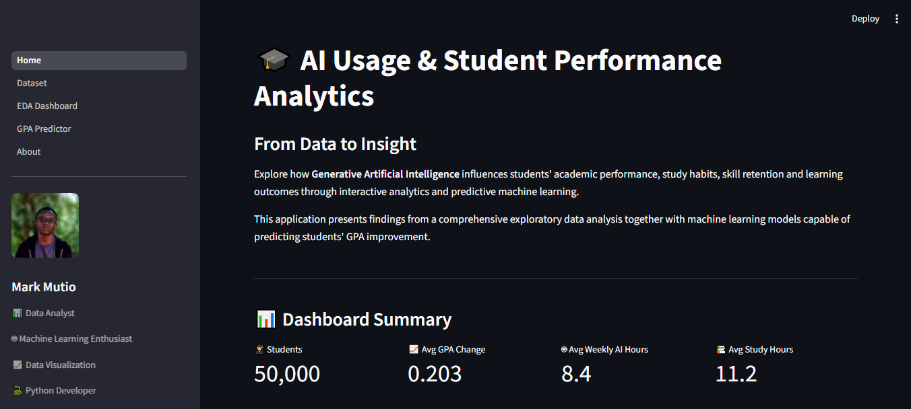
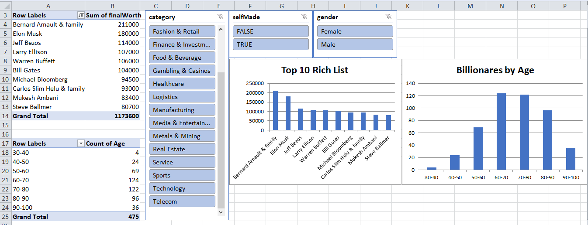
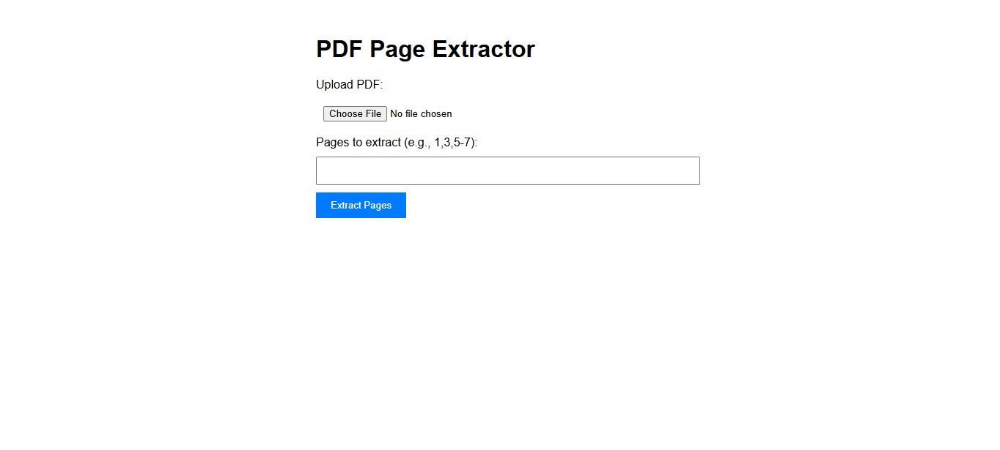
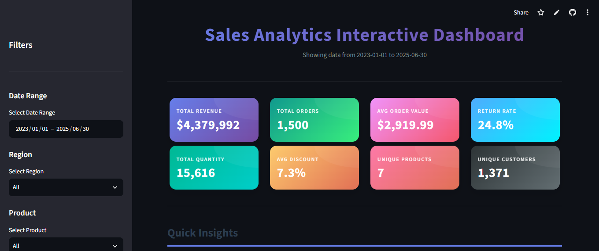

I specialize in data science, machine learning, and data analytics, with hands-on experience building predictive models, interactive dashboards, and AI-powered applications. I'm passionate about transforming data into actionable insights, solving real-world business problems, and continuously exploring emerging AI technologies.
Turning data into decisions, one insight at a time.
See My ProjectsMeru University of Science & Technology
St. James Matulani High School
Personal Projects
KALRO Katumani

A machine learning and data analytics application that analyzes the impact of generative AI on student academic performance. Built with Python, Scikit-learn, and Streamlit, it features interactive dashboards, exploratory data analysis, and real-time GPA prediction

An end-to-end data analytics project that explores the Global Billionaires dataset using Python and Microsoft Excel. Features data cleaning, exploratory analysis, and an interactive dashboard for visualizing wealth distribution, industry trends, and geographic insights.

A lightweight web application that solves a common PDF workflow problem: extracting only the pages a user needs without opening a full PDF editor. Users can upload a PDF, specify individual pages or page ranges, and instantly download a new PDF containing only the selected pages.

Interactive sales analytics dashboard providing real-time visibility into revenue, product performance, and workforce productivity. Built with Streamlit and Plotly, featuring dynamic filtering, performance tiering, and exportable insights for data-driven decision making.
Problem: Determine whether generative AI usage has a measurable impact on students' academic performance.
Approach: Performed data cleaning, exploratory data analysis (EDA), feature engineering, and trained multiple machine learning models to predict GPA changes.
Technologies: Python, Pandas, NumPy, Matplotlib, Scikit-learn, Streamlit.
Outcome: Built an interactive Streamlit application capable of visualizing trends and predicting student GPA based on AI usage and learning behaviors.
View ProjectProblem: Explore global billionaire data to uncover trends in wealth creation, industry dominance, geographic distribution, and demographic characteristics.
Approach: Cleaned and analyzed the dataset using exploratory data analysis (EDA), statistical summaries, and visualizations to identify meaningful patterns and relationships.
Technologies: Python, Pandas, NumPy, Matplotlib, Seaborn, Jupyter Notebook.
Key Insights: Technology and Finance produced the highest number of billionaires, the United States led globally in billionaire count, and self-made billionaires significantly outnumbered inherited wealth holders.
Outcome: Developed an analytical report and interactive visualizations that transform raw billionaire data into actionable business insights and compelling data stories.
View ProjectProblem: Design a scalable analytics pipeline capable of tracking customer behavior, transaction flows, marketing touchpoints, and conversion funnels.
Approach: Designed a dimensional data model and built a Python-based ETL/EDA framework with automated feature engineering and dynamic dashboarding.
Technologies: Python (Pandas, NumPy, Scikit-learn), SQL, Tableau/Power BI, Jupyter Notebooks, Git.
Outcome: Produced an actionable customer intelligence solution for efficient cohort analysis, churn prediction, and business KPI reporting.
Focus: Comparing machine learning algorithms, feature engineering techniques, and model evaluation metrics to improve predictive performance.
Models: Linear Regression, Decision Tree, Random Forest.
Evaluation: MAE, RMSE, R² Score, Cross Validation, Feature Importance.
Goal: Identify the best-performing model while improving prediction accuracy and interpretability.
Open to opportunities in Data Science, Machine Learning, Data Analytics, and AI application development. I enjoy building intelligent solutions that transform data into actionable insights and solve real-world business problems.